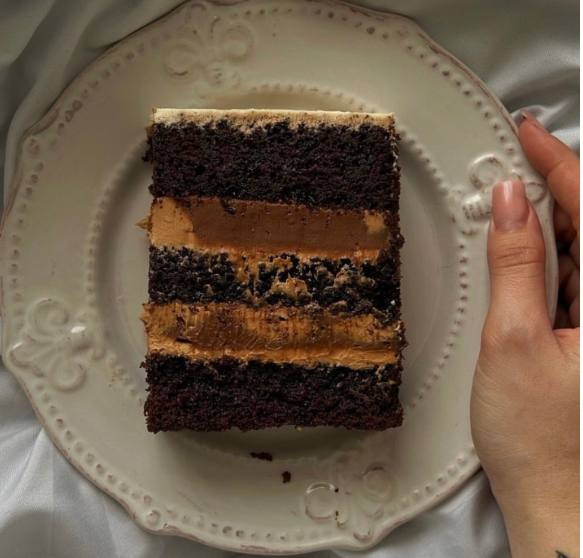
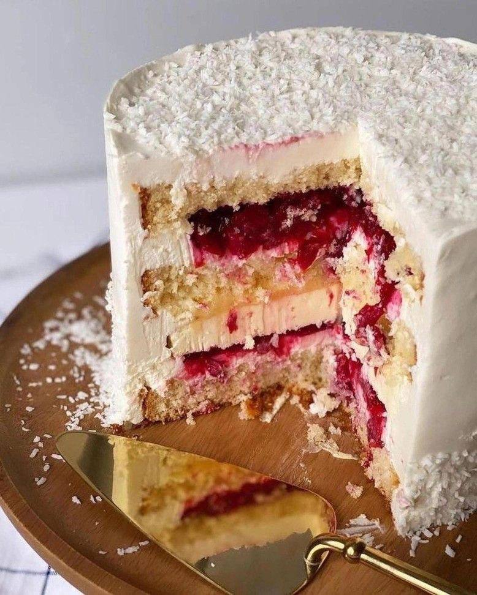
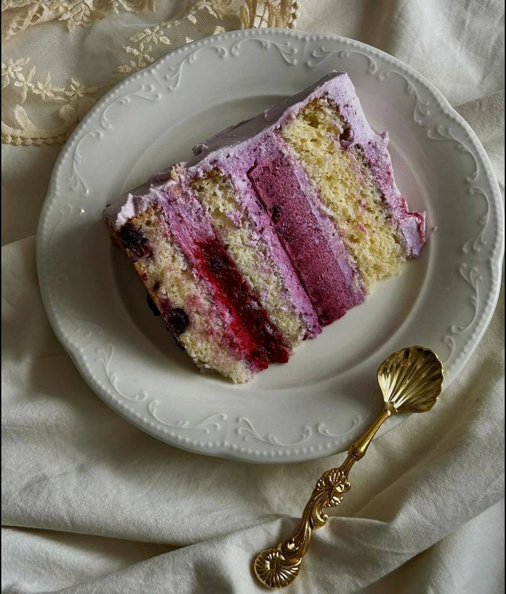

Bento - ciasto dla 2-4 osob
W cenie ciasta jest świeczka, opakowanie i łatwy wzór lub napis, kształt moze być okrągly lub serce
Bento-cake, czyli torcik bento to niewielkie ciasto zapakowane w pojemniczek "na wynos" Ciasto sklada się z dwóch biszkoptowych blatów i ma jedno przełozenie z kremu, np. z dodatkiem owoców. Torcik odpowiada 1-2 porcjom. Torciki bento są kolorowe, uroczo zrobione kremem i najczęściej zdobu je takze napis wykonanu z kremu. Wyglądają jak pełnowymiarowe torty z tą róznicą, ze są niewielkich rozmiarów
Smaki
-
Biszkopt waniliowy z serkiem śmietankowym i truskawkami albo wiśnią cena - 80 zl
-
Biszkopt waniliowy z serkiem śmietankowym karmelem i bananem cena - 80 zl
-
Biszkopt "czerwony aksamit" z serkiem śmietankowym i truskawkami albo wiśnią cena - 80 zl
-
Biszkopt czekoladowy z serkiem śmietankowym i truskawkami albo wiśnią cena - 80 zl
-
Biszkopt czekoladowy ze slonym karmelem i orzeszkami ziemnymi "jak snikers" cena - 80 zl
-
Biszkopt czekoladowy z czekoladowym cream-cheesem i karmelem z chrupkami cena - 80 zl
-
Biszkopt waniliowy z serkiem i nadzieniem Raffaello (biała czekolada, mleko konstruktowane, wiórki kokosowe, orzechy) cena - 80 zl
-
Pistacja-malina - pistacjowy maślany biszkopt, ganache pistacjowy na bazie białej czekolady, kuli malinowy cena - 90 zl
BentoXL - ciasto dla 6-8 osób, waga ok. 1-kg
W cenie ciasta jest świeczka, opakowanie i łatwy wzór lub napis, kształt moze być okrągly lub serce
Smaki
-
Biszkopt waniliowy z serkiem śmietankowym i truskawkami albo wiśnią - 140zl/kg
-
Biszkopt waniliowy z serkiem śmietankowym karmelem i bananem - 140zl/kg
-
Biszkopt "czerwony aksamit" z serkiem śmietankowym i truskawkami albo wiśnią - 140zl/kg
-
Biszkopt czekoladowy z serkiem śmietankowym i truskawkami albo wiśnią - 140zl/kg
-
Biszkopt czekoladowy ze slonym karmelem i orzeszkami ziemnymi "jak snikers" - 140zl/kg
-
Biszkopt czekoladowy z czekoladowym cream-cheesem i karmelem z chrupkami - 140zl/kg
-
Ciasto o smaku "oreo" - biszkopt czekoladowy, muss z kawałkami ciastek "Oreo" - 140zl/kg
-
Pistacja-malina - pistacjowy maślany biszkopt, ganache pistacjowy na bazie białej czekolady, kuli malinowy - 160zl/kg
Torty artystyczne Średnica - 16cm
W cenie ciasta jest świeczka, opakowanie i łatwy wzór oraz napis inne szczególy omówimy po przesłaniu inspiracji wzoru, min. zamówienie od 1.5kg (wszystkie oprócz pistacji maliny)
Smaki
-
Pistacja-malina
pistacjowy maślany biszkopt, ganache pistacjowy na bazie białej czekolady, kuli malinowe - cena 160zl/kg

-
Hazelnut
czekoladowy maślany biszkopt, pralina z orzechami laskowymi, slonym karmelem i kremem na bazie masła orzechowego - cena 150zl/kg

-
Mango-Marakuja
cytrusowy maślany biszkopt, mango, kuli z marakui, krem na bazie serka śmietankowego - cena 150zl/kg

-
Karmelowa Kawa
Wilgotny mocno czekoladowy biszkopt, ganache na bazie ciemnej czekolady, mus kawowy
 -
Kokos-Wiśnia
Wilgotny kokosowy biszkopt , ręcznie robiona konfitura z wiśni, mus kokosowy
 -
Ciasto Borówkowe
Wilgotny biszkopt waniliowy, borówkowy ganache, borówkowy mus

Ciasto "Mleczna Dziewczynka"
1.5 kg - 140zl

Mega delikatne ciasto z kremem na bazie mascarpone i konfi z truskawek
Ciasto "Napoleon"
(Klasyczny lub z wiśnią)
Waga od 1.5 kg Cena - 90 zl/kg Średnica - 16cm

Delikatne upieczone francuskie ciasto, połączone z kremem na bazie mleka i zółtka
"Napoleon" piekę według przepisu moojej babci, dekorukę sezonowymi owocamiś
Babeczki - 15 zl
-
Czekoladowe ze słonym karmelem przykryte kremem na bazie serka śmietankowego
-
Cytrynowe/Pomarańczowe,przykryte kremem na bazie serka śmietankowego
-
"Czerwony aksamit" z nadzieniem z truskawek/wiśni, przykryte kremem na bazie serka śmietankowego
-
Waniliowy "Raffaello" ta orzeszkiem migdału